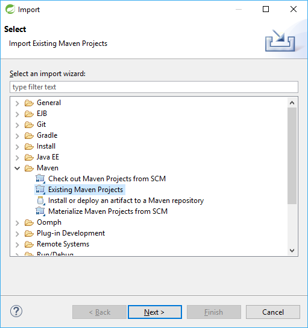

This book is the Module I of our course Spring Framework Rapid Tutorial For Real World Development. Here we’ll quickly get started with Spring Framework, and then learn its commonly used dependency injection features. It’s going to be very helpful when learning Spring — whether you take the full course or not.
| Prefer video tutorials? Visit here. |
About the course
The course, of which this book is the first module, is a beginner’s rapid guide for learning how to develop elegant real-world applications and APIs using latest Spring projects in the right ways. If you are new to Spring Framework, or you know some old version of Spring and want to rapidly catch up, then this will be your fastest route to become a Spring ninja. Instead of learning in a traditional way, feature-by-feature, here we will take a problem-solution approach. We will go deep into the commonly useful things, and touch upon the less common things in a brief manner, leaving up to you to find out more on your own, when needed. This would be the fastest and intuitive way to learn any vast and practical subject like Spring, as you’ll see.
"But Spring already has excellent reference material and official guides. Also there are numerous books, tutorials and blog posts around. So, why another course?" — you may ask.
Spring’s reference material, although great for reference, doesn’t serve as a step-by-step learning material. The official guides in turn are good for getting started, but only on some piecemeal topics. Most of the books and tutorials, on the other hand, teach Spring in a classroom manner. They try to cover all the topics, but don’t go deep into anyone. Consequently, after going through those, you’ll get familiar with Spring, but still be far away from coding real-world applications. At work with tight schedules, you’ll then be wasting your time to figure out solutions even for the common real-world scenarios. Some Stackoverflow or blog posts may help, but most of those will be obsolete – because Spring advances very fast.
So we thought to come up with this lean and agile real-world oriented course. Here we’ll begin from zero, assuming that you are absolutely new to Spring. But as we’ll progress, we’ll go deep into the scenarios that are typically needed in most real-world projects. We will use latest Spring versions, such as Spring 5 and Spring Boot 2, and see how to write neat and maintainable code using their best practices. Fear not if you are still using Spring 4 though — we’ll discuss about the incompatibilities and their solutions..
What we’ll cover
In Module I, which is this book, we’ll first learn how to create a new Spring project and code some "hello, world" stuff. Then we’ll explore Spring’s dependency injection concepts and its commonly used real-world dependency injection features — like profiles, application properties, conditional annotations etc. — using Java configuration rather than XML. Even if you don’t take the full course, this module is an independent course in itself that you can go through before taking any other Spring course.
In Module II, we’ll learn the concepts and useful real-world features of Spring MVC.
In Module III, we’ll dive into the commonly used Spring projects such as Spring Security, Spring Data, Spring AoP, and also some advanced Spring MVC stuff such as custom validation, validation groups and exception handling. We’ll also walk through coding a real-world user module having features like signup, login, verify email, forgot password, display and edit user profile. In fact, when developing a new Spring application, you can fork our source code and build upon that.
Being in the era of services and microservices rather than full-stack applications, in Module IV, we’ll learn how to develop real-world REST services using Spring and its latest best practices. In fact, we’ll go through a complete blueprint having many advanced features, such as social sign-on (using multiple providers like Google and Facebook), captcha validation, stateless API key authentication, cross-cutting validation and exception handling, etc.. That blueprint also includes a robust user module, and is actually packaged as a configurable and extensible open source library, named Spring Lemon. You can include that in your projects and, with some configuration, start coding your business logic straightaway.
To know more about the full course and the content, visit our landing page.
Before you begin
Prerequisites
To follow this book, you should already be knowing core Java and its object oriented features like classes and interfaces. Knowledge of web development will help but isn’t mandatory.
To follow the practical steps, you also should have JDK 8 and some IDE installed. We’ve used Oracle JDK 8 and Spring Tool Suite on a Windows 10 machine.
Source code
This book ia a step-by-step walkthrough, accompanied with source code available at GitHub. The code is tagged by lessons, and we’ll provide you the link to the exact tag below each lesson. Even if you are new to Git, you can find a downloadable zip by following that link.
Help and support
-
Community help is available at stackoverflow.com, under the
np-springtag. Do not forget to tag your questions withnp-spring— otherwise we’ll not get notified. -
For any bug, submit an issue here. But please check first that the issue isn’t already reported.
-
Mentoring, training and professional help is provided by naturalprogrammer.com.
A brief introduction to Spring Framework
Spring is one of the most popular frameworks for developing web and enterprise applications. Its core strength lies in its powerful dependency injection mechanism, which makes it a component based framework. This enabls us to develop an application by assembling some built-in, third party and self-coded components.
In addition to the core framework, Spring also has many other projects, such as Spring Data and Spring Security. Many of these again have multiple modules. For example, Spring Data has modules such as Spring Data JPA and Spring Data MongoDB. All these projects and modules come with rich sets of built-in components, which can be assembled along with your own components, and great applications can be built this way.
But assembling a Spring application this way is cumbersome, because, you’ll need to handpick the right JARs and components, and configure and assemble those properly. That’s why Spring came up with a project called Spring Boot, which does it automatically — based on factors like the JARs and application properties provided. Spring Boot doesn’t take the control away from us though – its automation can be easily overridden where needed.
In summary, Spring Boot makes a developer’s life very easy, and is highly recommended nowadays for almost all kinds of projects. In fact, we’re going to use it in this course.
Hello, world
So, let’s begin by creating a “Hello, world” application! There are multiple ways to create new Spring projects. Here are the common ones:
Creating from scratch
Because Spring projects are standard Java projects, you can just create those manually. In fact, the Spring guides like this one show how to do it that way. We won’t recommend it though — there are easier ways available.
Using Spring Initializr
For easily creating new projects, Spring comes with an Initializr wizard available at start.spring.io. You can feed your project metadata there and download a zip file, which you can unzip and import in your IDE.
Using an IDE
IDEs go one step further. For example, Spring Tool Suite provides a Spring Starter Project wizard, available as shown below:
If you have IntellijIDEA, you’ll find a wizard at File → New → Project, looking as below:
These wizards in fact use the same start.spring.io service under the hood, and ask for the same set of metadata.
So, ready to take off? Open your IDE, and follow me.
Project metadata
Whether you use start.spring.io or an IDE, you’ll need to provide the following metadata.
Name
Give a nice name to your project. Better to use small alphanumeric characters and dashes only. We chose np-spring5-tutorial for the accompanying sample project.
Type
It’s the build tool to use. New to build tools? They help compile and package our projects. No problem if you are new to these – we are going to discuss whatever is needed.
You’ll see a couple of options here: Maven and Gradle. Maven is very popular, whereas Gradle is newer and more powerful. We generally recommend Maven because of its better ecosystem and tooling support.
If you instead choose Gradle, you’ll find three options in STS: Buildship 1.x, Buildship 2.x and STS. These are actually STS plugins, and Buildship 2.x is the latest one which should be preferred.
|
Packaging
You’ll see two options here: JAR and WAR. Whatever you choose, our build is going to be a über or fat executable — with tomcat and all the dependent JARs embedded — which can be run standalone by using the standard java -jar command. These über executables are preferred nowadays, over traditional WARs, because these are easily deployable, e.g. at cloud services.
So, let’s choose JAR. We can easily change it later if needed, e.g. when using JSP.
Java version
Spring 4.x still supports Java 6 and 7, but we are going to use Spring 5. So, choose Java 1.8.
Group and Artifact
Group and Artifact uniquely identify a project. Group identifies a group to which the project belongs, whereas Artifact identifies the project inside the group.
Group names typically begin with a domain name owned by the project creator, in reverse order. For example, the group name of our projects would be com.naturalprogrammer, because we own naturalprogrammer.com. No problem if you don’t own a domain – you can use some name that you feel would be unique. Unless the project is going to be used along with some other clashing projects, it won’t be a problem.
The Artifact would typically be equal to the name of the project, e.g. np-spring5-tutorial in our case.
Version
This is the version of the project. Leave it untouched for now.
Description
A one line description of the project.
Package
This is the root package name of your application. It’s typically formed by joining the group and the artifact, e.g. com.naturalprogrammer.spring5tutorial. Remember that - isn’t allowed here — you can either omit those or replace those with underscores.
If you’re using STS, you may need to press Next now.
|
Spring Boot Version
This is the Spring Boot release to use. The latest stable release as of this writing is 1.x.x, which brings in Spring 4. But we want to use Spring 5, and so choose the latest milestone or RC release. We had chosen 2.0.0 M2 when creating the accompanying project.
Dependencies
This widget asks us to choose the dependencies — i.e. the libraries our application will be using. Whatever you choose here goes into the build configuration file. The build tool would then automatically download and include the related JARs in our project.
Choose just Web for now. We can easily add more dependencies to the
configuration file later.
With this much metadata fed, you can now generate the project! If you are doing this first time, your IDE will take some time to download all the JARs to your local system.
Source code so far
Click here to browse and download the source code so far.
If you know Git, looking at the above URL you’ll have figured out that the project is hosted at GitHub, with tags corresponding to the topics of this book. For example, new-project is the tag name for the source code so far.
|
How to import the downloaded project to STS? Use the File → Import → Existing Maven Projects wizard:

Figure 3. Importing existing Maven projects
|
Glancing at the source code
Browsing the source code of the generated project will tell you that it’s just a java application, with the standard maven layout:
Let’s give a look inside it.
pom.xml
At the root of the project, you’ll find a file named pom.xml, which is the configuration file that Maven uses to know about the project. It’ll look as below:
<?xml version="1.0" encoding="UTF-8"?>
<project xmlns="http://maven.apache.org/POM/4.0.0" xmlns:xsi="http://www.w3.org/2001/XMLSchema-instance"
xsi:schemaLocation="http://maven.apache.org/POM/4.0.0 http://maven.apache.org/xsd/maven-4.0.0.xsd">
<modelVersion>4.0.0</modelVersion>
<groupId>com.naturalprogrammer</groupId>
<artifactId>np-spring5-tutorial</artifactId>
<version>0.0.1-SNAPSHOT</version>
<packaging>jar</packaging>
<name>np-spring5-tutorial</name>
<description>Demo project for Spring Boot</description>
<parent>
<groupId>org.springframework.boot</groupId>
<artifactId>spring-boot-starter-parent</artifactId>
<version>2.0.0.M2</version>
<relativePath/> <!-- lookup parent from repository -->
</parent>
<properties>
<project.build.sourceEncoding>UTF-8</project.build.sourceEncoding>
<project.reporting.outputEncoding>UTF-8</project.reporting.outputEncoding>
<java.version>1.8</java.version>
</properties>
<dependencies>
<dependency>
<groupId>org.springframework.boot</groupId>
<artifactId>spring-boot-starter-web</artifactId>
</dependency>
<dependency>
<groupId>org.springframework.boot</groupId>
<artifactId>spring-boot-starter-test</artifactId>
<scope>test</scope>
</dependency>
</dependencies>
<build>
<plugins>
<plugin>
<groupId>org.springframework.boot</groupId>
<artifactId>spring-boot-maven-plugin</artifactId>
</plugin>
</plugins>
</build>
<repositories>
<repository>
<id>spring-snapshots</id>
<name>Spring Snapshots</name>
<url>https://repo.spring.io/snapshot</url>
<snapshots>
<enabled>true</enabled>
</snapshots>
</repository>
<repository>
<id>spring-milestones</id>
<name>Spring Milestones</name>
<url>https://repo.spring.io/milestone</url>
<snapshots>
<enabled>false</enabled>
</snapshots>
</repository>
</repositories>
<pluginRepositories>
<pluginRepository>
<id>spring-snapshots</id>
<name>Spring Snapshots</name>
<url>https://repo.spring.io/snapshot</url>
<snapshots>
<enabled>true</enabled>
</snapshots>
</pluginRepository>
<pluginRepository>
<id>spring-milestones</id>
<name>Spring Milestones</name>
<url>https://repo.spring.io/milestone</url>
<snapshots>
<enabled>false</enabled>
</snapshots>
</pluginRepository>
</pluginRepositories>
</project>Most metadata that we fed when creating the project are placed in it. Notice the highlighted portion above — it contains the dependencies, and the spring-boot-maven-plugin build plugin. The dependencies tell Maven what all other projects this project depends on, so that Maven will pull the required JARs and put those in the classpath. Maven does this recursively, i.e., the JARs on which the dependencies depend on will also be pulled and put onto the classpath, and so on.
The spring-boot-maven-plugin is used for packaging the application as a über JAR or WAR, which will have tomcat and all the dependent JARs embedded. That JAR can then be run just by using java -jar, as below:
java -jar spring5-tutorial-0.0.1-SNAPSHOT.jarJava classes
The wizard also created a couple of Java classes, as shown below:
package com.naturalprogrammer.spring5tutorial;
import org.springframework.boot.SpringApplication;
import org.springframework.boot.autoconfigure.SpringBootApplication;
@SpringBootApplication
public class NpSpring5TutorialApplication {
public static void main(String[] args) {
SpringApplication.run(NpSpring5TutorialApplication.class, args);
}
}This is the main class, and the highlighted SpringApplication.run configures and runs the application.
package com.naturalprogrammer.spring5tutorial;
import org.junit.Test;
import org.junit.runner.RunWith;
import org.springframework.boot.test.context.SpringBootTest;
import org.springframework.test.context.junit4.SpringRunner;
@RunWith(SpringRunner.class)
@SpringBootTest
public class NpSpring5TutorialApplicationTests {
@Test
public void contextLoads() {
}
}This is just an empty test class.
Other folders and files
Under src/main/resources, you’ll find a couple of empty folders and an empty application.properties file. We’ll discuss about those later.
Running the application
Let’s now see the application running!
In STS, using the Boot Dashboard is the best way to run Spring Boot applications. If it’s not visible, open it by clicking on the icon shown below:
The dashboard looks like this:
As shown above, first select the application there, and then click on the debug (or run) button to run it.
| Other ways to run the application in STS will be to select either the project or the main class (or right click on the project or the main class), click on the Debug or Run button on the toolbar, and then to select either Java Application or Spring Boot App. |
Coding a Hello Controller
But running the application doesn’t do anything except just writing a few lines to the console. To see some action, let’s code a controller class and a request handler method in that. These terms look like alians? Don’t worry, you don’t need to know about these now. Just carry on.
So, create a new package inside the root package, say controllers, and create a new class in that, say HelloController.
| The controllers package — and in fact any package we’ll be creating in this tutorial — must be a sub-package of the root package, i.e. com.naturalprogrammer.spring5tutorial. Why so? We’ll discussed that in a later section. |
Then, code HelloController as below:
package com.naturalprogrammer.spring5tutorial.controllers;
import org.springframework.web.bind.annotation.RequestMapping;
import org.springframework.web.bind.annotation.RestController;
@RestController
public class HelloController {
@RequestMapping("/hello")
public String hello() {
return "Hello, world";
}
}Now, press the Debug button on the Boot Dashboard to rerun the application. Then visit http://localhost:8080/hello on a browser, and you’ll see "Hello, world!"
But how does this work? Not yet the rigt time to discuss about that. Instead, next section onwards, we’ll explore Spring’s DI features.
Source code so far
Dependency Injection - Setting The Stage
In this section, we’ll code a simple service for sending emails, which’ll help us understand dependency injection concepts later.
Coding the service
So, let’s code an interface, named MailSender, and a couple of its implementations, named SmtpMailSender and MockMailSender. SmtpMailSender
will be used for sending SMTP mails, whereas MockMailSender will just write the mail content to the console.
Let’s start by creating a new package in the root package, say mail, and then create the following:
package com.naturalprogrammer.spring5tutorial.mail;
public interface MailSender {
void send(String to, String subject, String body);
}As you see, the send method above takes three parameters:
-
to: the email id to which the mail will be sent
-
subject: the subject of the mail
-
body: the body of the mail
Time to code the implementations:
package com.naturalprogrammer.spring5tutorial.mail;
import org.apache.commons.logging.Log;
import org.apache.commons.logging.LogFactory;
public class MockMailSender implements MailSender {
private static Log log = LogFactory.getLog(MockMailSender.class);
@Override
public void send(String to, String subject, String body) {
log.info("Sending MOCK mail to " + to);
log.info("with subject " + subject);
log.info("and body " + body);
}
}As you see, MockMailSender just writes the mail onto the log.
1
2
3
4
5
6
7
8
9
10
11
12
13
14
15
16
17 package com.naturalprogrammer.spring5tutorial.mail;
import org.apache.commons.logging.Log;
import org.apache.commons.logging.LogFactory;
public class SmtpMailSender implements MailSender {
private static Log log = LogFactory.getLog(SmtpMailSender.class);
@Override
public void send(String to, String subject, String body) {
log.info("Sending SMTP mail to " + to);
log.info("with subject " + subject);
log.info("and body " + body);
}
}
"What? SmtpMailSender as well just writes to the log?"
Yes, it’ll eventually send actual SMTP mails, but for now let it be simple. Notice that currently the only difference between it and the MockMailSender is the word SMTP in line 13.
Testing the service
For testing the service, let’s now code a MailController class in the controllers package, as below:
package com.naturalprogrammer.spring5tutorial.controllers;
import org.springframework.web.bind.annotation.RequestMapping;
import org.springframework.web.bind.annotation.RestController;
import com.naturalprogrammer.spring5tutorial.mail.MailSender;
import com.naturalprogrammer.spring5tutorial.mail.MockMailSender;
@RestController
public class MailController {
private MailSender mailSender = new MockMailSender();
@RequestMapping("/mail")
public String mail() {
mailSender.send("mail@example.com", "A test mail", "Body of the test mail");
return "Mail sent";
}
}As you see above, the instance variable mailSender is instantiated with a new MockMailSender. It’s then used in the request handler method to send the mail.
If you now run the application and visit http://localhost:8080/mail, you’ll see “Mail sent” in the browser, and the log lines on the console.
Source code so far
Dependency Injection - The Basics
We just wrote some evil code. Guess what?
The Problem
In MailController, we’ve instantiated a MailSender like this:
private MailSender mailSender = new MockMailSender();Referring to the concrete class MockMailSender above tightly couples it to MailController. In other words, MailController is now depending on MockMailSender. That means, if we ever change our mind to use SmtpMailSender instead of MockMailSender, we’ll need to alter the source code.
This kind of tight coupling with concrete classes is evil. It won’t let us switch the implementations easily. For example, we now can’t use MockMailSender in development environment whereas SmtpMailSender in production.
This is where dependency injection comes in. Let’s see how to do it in Spring.
The Spring Way
Using dependency injection of Spring, here is a solution to the above problem:
-
Annotate MockMailSender with
@Component:
...
import org.springframework.stereotype.Component;
@Component
public class MockMailSender implements MailSender {
...
}-
Change instantiating MockMailSender as below:
...
import javax.annotation.Resource;
...
@RestController
public class MailController {
@Autowired
private MailSender mailSender; // no more new MockMailSender()
...
}Run the application now and visit http://localhost:8080/mail, and you see it working!
So, what’s happening?
This is how it worked:
-
By annotating MockMailSender with @Component, we told Spring to create an instance of MockMailSender and keep it at "some place" when the application starts.
-
By annotating the mailSender variable with @Autowired, we told Spring to go to "that place," search for an object of type MailSender, and assign a reference of that to this variable.
That place, where Spring kept the MockMailSender instance, is called Application Context.
So, to summarize, Spring maintains an Application Context where it keeps some objects, which are also called beans. When a Spring application starts, Spring looks for some metadata — like the @Component annotation — for building the application context. The @RestController annotation, which our MailController is annotated with, is also like the @Component annotation — Spring also creates instances of classes annotated with @RestController. That’s why when our application started, Spring created a MailController bean as well. That time, seeing that its mailSender field was annotated with the @Autowired annotation, Spring assigned mailSender a reference to the MockMailSender bean that it had already stored in the application context.
Summary
So, when developing a Spring application, you basically have to know two things:
-
How to tell Spring to put objects into the application context. i.e. what kind of metadata, like the @Component annotation, to use.
-
How to tell Spring to inject in your code references to the objects in the application context, i.e. what kind of metadata, like the @Autowired annotation, to use.
There are multiple ways to do these – Spring’s DI is very rich. Next section onwards, we are going to go more deep into these.
Source code so far
Injecting Beans
In the last section, we used @Autowired to get a reference to a bean. Let’s learn more about it.
Applying @Autowired on methods
@Autowired can be applied not only on fields — as we did in the last section — but also on instance methods and constructors. See the examples below:
@RestController
public class MailController {
private MailSender mailSender;
@Autowired
public void setMailSender(MailSender mailSender) {
this.mailSender = mailSender;
}
...
}@RestController
public class MailController {
private MailSender mailSender;
@Autowired
public MailController(MailSender mailSender) {
this.mailSender = mailSender;
}
...
}When @Autowired is applied on instance methods or constructors as above, those are called by Spring, and the parameters are injected. There can be more than one parameters — all will be injected.
The first example is commonly called setter injection, because the instance method happens to be a setter in this case. The second example is called constructor injection.
In the second example, we can actually omit @Autowired (unless you’re using a Spring version less than 4.3). When Spring will create the instance of MailController, it’ll call the constructor with all the parameters automatically injected. Had there been more than one constructors though, you would have to annotate one with @Autowired.
So, let’s change our MailController as below:
@RestController
public class MailController {
private MailSender mailSender;
public MailController(MailSender mailSender) {
this.mailSender = mailSender;
}
...
}Test it out, if you wish, by running the application and visiting http://localhost:8080/mail.
Multiple beans – how to inject the right one?
But what will happen if more than one bean will become eligible for an injection? To check, annotate SmtpMailSender as well with @Component:
@Component
public class SmtpMailSender implements MailSender {
...
}Restart the application now, and let’s see what happens.
Oops! Trying to restart, we see an error on the console!
It’s because, when injecting a MailSender to MailController, Spring found more than one candidate beans — the instances of both MockMailSender and SmtpMailSender.
So, how to fix this? There are multiple ways — let’s look at a few.
Dependency injection by name
Just rename the parameter of MailController’s constructor to smtpMailSender:
@RestController
public class MailController {
private MailSender mailSender;
public MailController(MailSender smtpMailSender) {
this.mailSender = mailSender;
}
...
}Run the application now, and it’ll work!
To undertand why it worked, you’ll have to know two things:
-
Spring gives a name to every bean it creates. That means, when creating beans of MockMailSender and SmtpMailSender, Spring gives those some names. By default, the class names in camelCase, i.e.
mockMailSenderandsmtpMailSender, become the names of the beans. -
In case of ambiguity when injecting a bean, the bean having the same name as the parameter name will be injected. That means, in the above code, because the name of the parameter is smtpMailSender, the smtpMailSender bean will be injected.
This is called dependency injection by name.
Changing the name of a bean
The name of a bean can be changed by providing a default attribute to the @Component like annotations. For example, the following will set the name of the SmtpMailSender bean to smtp:
@Component("smtp")
public class SmtpMailSender implements MailSender {
...
}Test it out by changing the parameter name in MailController to smtp, and then visiting http://localhost:8080/mail.
Source code so far
The @Primary annotation
Another way to resolve the ambiguity is to annotate one candidate bean class with @Primary. So, annotate MockMailSender with @Primary:
@Component
@Primary
public class MockMailSender implements MailSender {
...
}Test it out — now the MockMailSender should be used.
Bean qualifiers
Spring beans, apart from having a name, will also have a qualifier. By default, the qualifier will be same as the name of the bean, but you can override it using the @Qualifier annotation. For example, in the SmtpMailSender class, remove the "smtp" attribute from @Component and add @Qualifier("smtpMail"):
@Component
@Qualifier("smtpMail")
public class SmtpMailSender implements MailSender {
...
}In MailController, you can now use the same annotation when injecting the bean:
@RestController
public class MailController {
private MailSender mailSender;
public MailController(
@Qualifier("smtpMail")
MailSender smtp) {
this.mailSender = mailSender;
}
...
}Now remove the @Primay annotation from MockMailSender, and test it out!
| As I told above, removing the @Qualifier annotation from SmtpMailSender will set its qualifier to smtpMailSender by default. You can then use the same, i.e. @Qualifier("smtpMailSender"), in MailController. |
Source code so far
Constructor, setter or field injection?
Now that we have seen constructor, setter and field injections, you may be thinking which one to prefer. The Spring documentation recommends constructor injection in general, and we have the same view.
@Resource and @Inject
Spring also provides a @Resource annotation and supports the Java CDI
JSR-299 @Inject annotation, which are similar to @Autowired. However, @Autowired should be generally preferred — it’s the most powerful and popular one.
Functionally there are some subtle differences between these three, which won’t matter in most cases though. For example, @Resource first tries to match by name, and then falls back to by type. In contrast, @Autowired and @Inject first try to match by type. David Kessler has written an interesting article on it, if you’re curious.
Configuring Beans
In this section, we’ll start discussing how to configure beans, i.e. how to put objects into the application context.
Component annotations
Spring creates beans for classes annotated with @Component or one of its specializations, e.g.:
-
@RestController
-
@Controller
-
@Service
-
@Repository
-
@Configuration
-
@SpringBootApplication
In fact, we have already seen @Component and @RestController in action.
Component scanning
The application context is created when the application starts, by calling SpringApplication.run in the main method in the NpSpring5TutorialApplication class.
Notice that NpSpringTutorialApplication is annotated with @SpringBootApplication. This tells Spring to scan for classes that are annotated with @Component, or any of its specialization such as @RestController, and create beans for those. By default, scanning will be done only inside the package (and all sub-packages) of the class that’s is annotated with @SpringBootApplication. If you want some other packages to be scanned as well, there are a few ways to do so. For example, you can pass a scanBasePackageClasses attribute to @SpringBootApplication, as below:
@SpringBootApplication(scanBasePackageClasses = {
NpSpringTutorialApplication.class,
SomeClassInTheOtherPackage.class})Spring will then scan for the packages of all the given classes, including their sub-packages.
Configuration classes
But how to create beans of classes from a third-party JAR, which we can’t annotate with @Component?
In such case, we could use Java configuration classes. To illustrate, remove @Component and any other annotations from SmtpMailSender and MockMailSender. Let them be plain classes, without being aware that they are going to be used by a spring application:
// @Component
public class SmtpMailSender implements MailSender {
...
}
// @Component
public class MockMailSender implements MailSender {
...
}Now create a class, say MailConfig, residing in any package that will be scanned by Spring — e.g. in the mail package — as below:
@Configuration
public class MailConfig {
@Bean
public MailSender mockMailSender() {
return new MockMailSender();
}
@Bean
public MailSender smtpMailSender() {
return new SmtpMailSender();
}
}Try running the application now, and it’ll work. How?
The @Configuration annotation tells Spring that it’s a configuration class. When the application context is built, the methods that are annotated with @Bean inside such configuration classes are executed, and their return values are stored as beans. The name of the methods become the name of the beans by default.
| You can have multiple @Configuration classes in an application. |
Source code so far
XML Configuration
Like Java configuration classes, we can also use xml files to configure beans. In fact, it was the only way to configure beans in early days of Spring. But it’s normally avoided nowadays. If you want to learn it though, there’s ample material lying on the Internet — so we’ll not cover it in this book.
Application properties
Before moving forward on dependency injection, this’ll be a good time to talk about application properties.
Every non-trivial application will have some properties which differ from deployment to deployment. For example, the database connection details will differ in production environment, test environment, and development environment.
Spring has multiple ways to handle this. When using Spring Boot, a good way to maintain such properties is to use the application.properties file in the src/main/resources folder.
To have a taste of it, let’s change the HelloController to show a variable message, say like this:
@RestController
public class HelloController {
private String appName;
@RequestMapping("/hello")
public String hello() {
return "Hello, world " + appName;
}
}Let’s now set appName from application.properties. To do so, first add a line in application.properties, as below:
app.name = Dev Env| The '=' above can also be a ':' |
Then, annotate the appName variable in HelloController with @Value("${app.name}"), as below:
@RestController
public class HelloController {
@Value("${app.name}")
private String appName;
...
}This will inject app.name property to the appName variable.
Now run the application and visit http://localhost:8080/hello — you’ll see "Hello, world Dev Env."
Deploying to a different environment
So, how to make the property value different in a different environment?
There are many ways to do it. A simple way is to place a different application.properties in the folder where application JAR is deployed. Property values in that external application.properties will override those in the internal application.properties.
To see it working, follow these steps:
-
Package the application. A simple way for this in STS is to right click on the project in the package explorer and choose Debug As → Maven install. This will create the application JAR inside the target folder, named spring5-tutorial-0.0.1-SNAPSHOT.jar.
-
Copy that JAR to some other location, and put a new application.properties file in that location, looking as below:
app.name: Prod Env-
Stop the application if it’s already running in the IDE.
-
Open a console, cd to that folder and run the JAR using the command:
java -jar spring5-tutorial-0.0.1-SNAPSHOT.jarNow visit http://localhost:8080/hello and you should see the overridden hello message.
So, this was a very simple example of setting property values externally. Spring Boot is very powerful in this area, providing lots of options suiting all kinds of scenarios. Spring Boot reference material has exhaustive documentation on it, and in our Module IV we’ll discuss an elegant pattern for externalizing configuration in real-world applications.
Source code so far
Spring profiles
A Spring application can be configured to behave differently in different environments by using profiles.
Let’s say you are developing an application for two kinds of businesses – book shops and grocery shops. Also, your application runs on different environments, say development, test and production. Under this scenario, you can plan to have five profiles:
-
book
-
grocery
-
dev
-
test
-
prod
You can then activate one or more profiles in a deployment by providing a spring.profiles.active property. For example, to activate book and prod profiles, add the following line in application.properties:
spring.profiles.active: book,prodBut, how to use these?
You can configure your beans based on the active profiles. Let’s say we are going to use the MockMailSender only in development environment, i.e. when dev is an active profile. Otherwise, we are going to use the SmtpMailSender. To configure so, annotate the bean methods with @Profile(…), as below:
@Configuration
public class MailConfig {
@Bean
@Profile("dev")
public MailSender mockMailSender() {
return new MockMailSender();
}
@Bean
@Profile("!dev")
public MailSender smtpMailSender() {
return new SmtpMailSender();
}
}Now, remove the @Qualifier annotation from MailController’s constructor, because the above code will anyway ensure that only one MailSender will be available in the application context:
public MailController(MailSender smtp) {
this.mailSender = smtp;
}Test the application now by altering spring.profiles.active, and you’ll see how the configured MailSender changes.
| @Profile can be used not only on bean methods, but also on component and configuration classes. |
Source code so far
Conditional annotations
The @Profile annotation, as we saw, can be used to include or exclude beans based on the active profiles. Spring also provides a @Condidional annotation that’s more generic; it can be used to include or exclude beans based on arbitrary conditions that we can provide.
In fact, Spring Boot comes with some variants of @Condidional — such as @ConditionalOnClass, @ConditionalOnProperty and @ConditionalOnMissingBean — and uses those vigorously to automatically configure the beans based on conditions like what classes are on the classpath, what properties are available in application.properties, what beans are already provided by the developer, etc. See its reference material for more details.
Let’s try an example. Say we will use the SmtpMailSender only if in our
application.properties we have a property named spring.mail.host; otherwise we’ll use MockMailSender.
So, remove the @Profile annotations from MailConfig and add @ConditionalOnProperty annotations as below:
@Configuration
public class MailConfig {
@Bean
@ConditionalOnProperty(name="spring.mail.host",
havingValue="foo", matchIfMissing=true)
public MailSender mockMailSender() {
return new MockMailSender();
}
@Bean
@ConditionalOnProperty("spring.mail.host")
public MailSender smtpMailSender() {
return new SmtpMailSender();
}
}The first use of @ConditionalOnProperty above will configure a MockMailSender only if there is a property spring.mail.host with value foo, or there is no such property. Wherever we will plan to use MockMailSender, we will provide no such property, and so it’ll work.
The second use of @ConditionalOnProperty will configure an SmtpMailSender only when spring.mail.host is provided.
|
Did you realize that if you provided a spring.mail.host property with value However, practically no SMTP host would be named as foo, and so the above code would work. |
Before testing it out, let’s clean up a bit. We no more need spring.profiles.active in application.properties — remove that. Why not also remove the app.name.
You’ll also need to need to remove app.name from HelloController, reverting it to:
@RestController
public class HelloController {
@RequestMapping("/hello")
public String hello() {
return "Hello, world ";
}
}Then add a spring.mail.host in application.properties, say as below:
spring.mail.host: smtp.gmail.comTest the application now, and you’ll see SmtpMailSender configured. Then, remove spring.mail.host from application.properties and you’ll see MockMailSender configured.
Refer the Javadoc of @ConditionalOnProperty to know more about it.
|
Don’t use @ConditionalOnBean and @ConditionalOnMissingBean unless you are sure of the bean creation order. For more details, see this stackoverflow post. Spring Boot’s auto configuration controls the bean creation order, and so Spring Boot uses these without any problem, though. It’s an advanced topic, and we’ll discuss about it in Module IV. |
Source code so far
Sending SMTP Mails
In this section, we’ll see how to send SMTP mails from Spring. We’ll also learn some more dependency injection concepts in the process.
Configuring a JavaMailSender
For sending SMTP mails, Spring comes with a JavaMailSender. So, we can plan to configure a JavaMailSender bean, inject that into SmtpMailSender and then use that to send SMTP mails.
Spring Boot will auto-configure a JavaMailSender if it’s found in the classpath and some properties are set. To add it to classpath, simply include the following in pom.xml, in the dependencies section:
<dependency>
<groupId>org.springframework.boot</groupId>
<artifactId>spring-boot-starter-mail</artifactId>
</dependency>Then, for the JavaMailSender to be configured properly, we’ll need to specify a few properties in application.properties. The exact properties to be specified will depend on the SMTP service that we’re planning to use. Looking at MailProperties.java will give you a hint. For using Gmail, specify the following:
spring.mail.host = smtp.gmail.com
spring.mail.username = from_gmail_id@gmail.com
spring.mail.password = an_application_password
spring.mail.properties.mail.smtp.auth = true
spring.mail.properties.mail.smtp.socketFactory.port = 465
spring.mail.properties.mail.smtp.socketFactory.class = javax.net.ssl.SSLSocketFactory
spring.mail.properties.mail.smtp.socketFactory.fallback = false
spring.mail.properties.mail.smtp.ssl.enable = truefrom_gmail_id@gmail.com above is the ID from which the mails will be sent. Replace it with an ID that you own. Similarly, replace an_application_password with one of your application passwords.
| For using Gmail service, you must have activated 2-step verification, and the password given above should be an application password. |
Coding our SmtpMailSender
Let’s now update our SmtpMailSender to send real mails, using the JavaMailSender. It’ll look as below:
1
2
3
4
5
6
7
8
9
10
11
12
13
14
15
16
17
18
19
20
21
22
23
24
25
26
27
28
29
30
31
32
33
34
35 package com.naturalprogrammer.spring5tutorial.mail;
import javax.mail.MessagingException;
import javax.mail.internet.MimeMessage;
import org.springframework.mail.javamail.JavaMailSender;
import org.springframework.mail.javamail.MimeMessageHelper;
public class SmtpMailSender implements MailSender {
private JavaMailSender javaMailSender;
public SmtpMailSender(JavaMailSender javaMailSender) {
this.javaMailSender = javaMailSender;
}
@Override
public void send(String to, String subject, String body) throws MessagingException {
MimeMessage message = javaMailSender.createMimeMessage();
MimeMessageHelper helper;
helper = new MimeMessageHelper(message, true); // true indicates
// multipart message
helper.setSubject(subject);
helper.setTo(to);
helper.setText(body, true); // true indicates html
// continue using helper for more functionalities
// like adding attachments, etc.
javaMailSender.send(message);
}
}
In lines 11-16, we declare a JavaMailSender instance variable and a constructor for injecting that. In lines 21-33, we create a MimeMessage and then a MimeMessageHelper. Using that helper, we then set the subject, to, etc. Finally, we send the mail using the javaMailSender.
The above send method has now a throws declaration, which also needs to be added to the MailSender interface and the MailController:
public interface MailSender {
void send(String to, String subject, String body)
throws MessagingException;
}@RestController
public class MailController {
...
@RequestMapping("/mail")
public String mail()
throws MessagingException {
...
}How to inject JavaMailSender
Looking at the SmtpMailSender code above, you may be thinking that the javaMailSender variable there’ll be injected by Spring, because we’ve provided a constructor that should be implicitly @Autowired.
Nope, that’s wrong, because we haven’t annotated the class with @Component, and so Spring won’t create the bean for the class. Instead, we create the bean for the class manually — in the smtpMailSender method of MailConfig class, if you remember. So, we’ll have to inject the variable manually.
One way to do so would be autowiring a JavaMailSender in MailConfig, and supplying that when calling SmtpMailSender’s constructor in the smtpMailSender method, like this:
1
2
3
4
5
6
7
8
9
10
11
12
13
14
15 @Configuration
public class MailConfig {
@Autowired
private JavaMailSender javaMailSender;
...
@Bean
@ConditionalOnProperty("spring.mail.host")
public MailSender smtpMailSender() {
return new SmtpMailSender(javaMailSender);
}
}
Instead of autowiring the javaMailSender using field injection as above (lines 4-5), we can also use setter or constructor injection. But, we also can just supply a JavaMailSender as a parameter to the smtpMailSender method, which’ll look much cleaner:
@Configuration
public class MailConfig {
...
@Bean
@ConditionalOnProperty("spring.mail.host")
public MailSender smtpMailSender(JavaMailSender javaMailSender) {
return new SmtpMailSender(javaMailSender);
}
}Parameters of methods annotated with @Bean are injected by Spring, and so the above works.
Test sending SMTP mails now! When visiting http://localhost:8080/mail, you’ll now notice that the page will stall for a second or two. To avoid that, we should send mails asynchronously, which we’ll discuss in Module III.
Source code so far
Caching Bean Methods
The return values of @Bean methods inside @Configuration classes are cached. Calling a bean method a second time returns the cached value instead of re-executing the method.
To illustrate, let’s create a DemoBean in the mail package, as below:
import org.apache.commons.logging.Log;
import org.apache.commons.logging.LogFactory;
public class DemoBean {
public DemoBean() {
log.info("Demo bean created");
}
}It just writes a log line when created. Then, let’s configure it in MailConfig:
@Configuration
public class MailConfig {
...
@Bean
public DemoBean demoBean() {
return new DemoBean();
}
...
}So, when the application starts, a demoBean bean will be created. Now, if you want to use that bean in another bean method, say inside the smtpMailSender method, what will you do?
You already know a couple of ways to do so. You can use @Autowired to inject that as an instance variable just like injecting any other bean, or you can have that as a parameter of the smtpMailSender method. Having that as a parameter will look like this:
@Bean
@ConditionalOnProperty("spring.mail.host")
public MailSender smtpMailSender(JavaMailSender javaMailSender,
DemoBean demoBean) {
...
}Alternatively, you can also simply call the demoBean() method, as below!
@Bean
@ConditionalOnProperty("spring.mail.host")
public MailSender smtpMailSender(JavaMailSender javaMailSender) {
demoBean();
...
}But, will not the demoBean() method be called twice now — once when Spring calls it to create the bean, and a second time when we will call it inside the smtpMailSender method?
No. In contrast, bean creation methods in configuration classes run only once. Spring caches their return values, and returns those in subsequent calls. So, demoBean() will execute only once. To check it out, run the application and see that the log line in DemoBean’s constructor is written only once.
| But there can be bean creation methods in @Component classes as well, and their return values aren’t cached. You can test it out by replacing @Configuration with @Component on MailConfig. |
The code that we wrote in this section was solely for demo purpose. Rollback that before proceeding. Also, comment the spring.mail.host line in application.properties:
# spring.mail.host = smtp.gmail.com
spring.mail.username = from_gmail_id@gmail.com
spring.mail.password = an_application_password
spring.mail.properties.mail.smtp.auth = true
spring.mail.properties.mail.smtp.socketFactory.port = 465
spring.mail.properties.mail.smtp.socketFactory.class = javax.net.ssl.SSLSocketFactory
spring.mail.properties.mail.smtp.socketFactory.fallback = false
spring.mail.properties.mail.smtp.ssl.enable = trueAbove will configure back the MockMailSender, which we plan to use in future sections.
Source code so far
Next Steps
Congratulations, you just finished the first module!
You should now have a solid understanding of Spring’s dependency injection concepts and commonly used real-world features. Of course there is much more to learn — Spring’s DI is very rich. For example, we covered only singleton beans, but beans in application context can have narrower scopes as well. We also didn’t talk about the lifecycle callbacks, e.g. how to execute a method when a bean is created or destroyed (we’re going to discuss it in Module III, though).
What should be your next step, then? You can now choose to either learn those advanced DI features, or move forward and learn other Spring projects like MVC, Security, Data, etc.. I would recommend the latter — we’ve already covered DI well enough, and you can always get back and refer to some advanced thing if needed.
So, time to move forward to the next module of our course, which covers Spring MVC! It’s currently available only in video version; the e-book will be added soon. Do register even if you don’t like videos though, because it’s free now, and you’ll get notified when the e-book will be released! Click here to register, or click here to know more about the full course.
See you there!